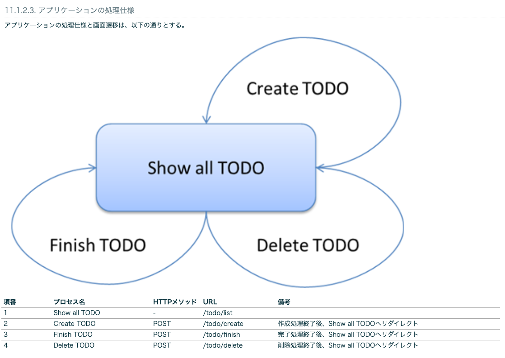

3. チュートリアル１：TODOアプリケーション¶
3.1. 環境構築¶
3.1.1. PJの作成¶
mvn archetype:generateコマンドは設定したフォーマットのjavaのプロジェクトのひな壇を作成してくれる。
フォーマットを作成することもでき、ベストプラクティスに従った構成を素早く作成できる。
オプションの意味は以下
archetypeGroupId:テンプレートの提供元ID
archetypeArtifactId:今回利用するテンプレートのID
archetypeVersion:テンプレートのバージョン
groupId:PJの識別子
artifactId:作成するJavaPJの名称
version:PJのバージョン名
mvn archetype:generate -B\
-DarchetypeGroupId=org.terasoluna.gfw.blank\
-DarchetypeArtifactId=terasoluna-gfw-web-blank-archetype\
-DarchetypeVersion=5.7.0.RELEASE\
-DgroupId=com.example.todo\
-DartifactId=todo\
-Dversion=1.0.0-SNAPSHOT
3.1.2. STSでのPJ立ち上げ¶
STSでImportする。
詳細はチュートリアルに有り
3.1.3. PJ構成¶
javaのPJ構成とそれぞれの役割
src/main/java：ここにModel操作やControllerのjavaクラスを格納
src/main/resources：Viewに当たるリソースを置く
static:cssやjsを置く
template:htmlを置く
application.proparties：ポートの設定など
src
└main
├java... (1)
│ └com
│ └example
│ └todo
│ ├ app
│ │ └todo
│ └domain
│ ├model
│ ├repository
│ │ └todo
│ └service
│ └todo
├resources... (2)
│ └META-INF
│ └spring
└wepapp
└WEB-INF
└views
3.1.4. PJの動作確認¶
src/main/java/com/example/todo/app/welcome/HelloController.javaのプロジェクトはトップページが準備されている。
★1 @ControllerのアノテーションによりControllerであることを認識させる
★2
@RequestMappingにより/のGETとPOSTに対してhomeというメソッドを紐付け。
処理内容はログの出力、日時の取得、日時情報をモデルに引き渡し、Viewへの連携
★3 ModelにAttribute（変数）を引き渡している。 model側でserverTimeという変数名が使える。
★4
viewのファイル名で、画面を表示先を指定
ViewResolverでsrc/main/webapp/WEB-INF/views/welcome/home.jsp配下のファイルが指定されている
/**
* Handles requests for the application home page.
*/
// ★★★★★1★★★★★
@Controller
public class HelloController {
private static final Logger logger = LoggerFactory
.getLogger(HelloController.class);
/**
* Simply selects the home view to render by returning its name.
*/
// ★★★★★2★★★★★
@RequestMapping(value = "/", method = {RequestMethod.GET, RequestMethod.POST})
public String home(Locale locale, Model model) {
logger.info("Welcome home! The client locale is {}.", locale);
Date date = new Date();
DateFormat dateFormat = DateFormat.getDateTimeInstance(DateFormat.LONG,
DateFormat.LONG, locale);
String formattedDate = dateFormat.format(date);
// ★★★★★3★★★★★
model.addAttribute("serverTime", formattedDate);
// ★★★★★4★★★★★
return "welcome/home";
}
}
3.2. Todoアプリケーションの作成¶
ドメイン層とアプリケーション層のステップで作成する。
ドメイン層では、Model、Repository、Serviceを作成する。
Modelは変数定義を記述 。
RepositoryはInterfaceとImplementを作成して、中身としては業務を含まないCRUD処理を記述。
Serviceは業務まで含んだ、エラーメッセージのハンドリングまで含めて記述。
アプリケーション層では、ControllerとViewを作成する。 Controllerでは、pathごとのメソッド作成や、viewとやり取りするmodelへのAttributeの追加などを記述。 Viewでは、JSPを記述して画面表示する内容を記述。
3.2.1. Domain層の作成¶
ドメイン層では、Model、Repository、Serviceを作成する。 Modelは変数定義を記述 。 RepositoryはInterfaceとImplementを作成して、中身としては業務を含まないCRUD処理を記述。 Serviceは業務まで含んだ、エラーメッセージのハンドリングまで含めて記述。
3.2.1.1. Model作成¶
src/main/java/com/example/todo/domain/model配下に作成
各プロパティとGetter・Setterを作成
todoId：ID
todoTitle：タイトル
finished：完了フラグ
createdAt：作成日
package com.example.todo.domain.model;
import java.io.Serializable;
import java.util.Date;
public class Todo implements Serializable {
private static final long serialVersionUID = 1L;
private String todoId;
private String todoTitle;
private boolean finished;
private Date createdAt;
public String getTodoId() {
return todoId;
}
public void setTodoId(String todoId) {
this.todoId = todoId;
}
public String getTodoTitle() {
return todoTitle;
}
public void setTodoTitle(String todoTitle) {
this.todoTitle = todoTitle;
}
public boolean isFinished() {
return finished;
}
public void setFinished(boolean finished) {
this.finished = finished;
}
public Date getCreatedAt() {
return createdAt;
}
public void setCreatedAt(Date createdAt) {
this.createdAt = createdAt;
}
}
3.2.1.2. Repository作成¶
3.2.1.2.1. Repository Interface作成¶
Interfaceから作成する
src/main/java/com/example.todo.domain.repository.todo配下にTodoRepository.javaを作成
各関数の引数と返り値のみが定義される。（中身はImplで作成） 記述する機能としては、業務とは独立したデータのCRUD処理のみ記述される
findById
findAll
create
update
delete
countByFinished
package com.example.todo.domain.repository.todo;
import java.util.Collection;
import java.util.Optional;
import com.example.todo.domain.model.Todo;
public interface TodoRepository {
Optional<Todo> findById(String todoId);
Collection<Todo> findAll();
void create(Todo todo);
boolean update(Todo todo);
void delete(Todo todo);
long countByFinished(boolean finished);
}
3.2.1.2.2. Repository Implementの作成¶
Implementを作成する
src/main/java/com/example.todo.domain.repository.todo配下にTodoRepositoryImpl.javaを作成
各関数の具体的な処理内容が記載される。 Interfaceで記述した機能について@Overrideして追記
findById
findAll
create
update
delete
countByFinished
★1
Impl側に@Repositoryを記述する。
package com.example.todo.domain.repository.todo;
import java.util.Collection;
import java.util.Map;
import java.util.Optional;
import java.util.concurrent.ConcurrentHashMap;
import org.springframework.stereotype.Repository;
import com.example.todo.domain.model.Todo;
// ★★★★★1★★★★★
@Repository
public class TodoRepositoryImpl implements TodoRepository {
private static final Map<String, Todo> TODO_MAP = new ConcurrentHashMap<String, Todo>();
@Override
public Optional<Todo> findById(String todoId) {
return Optional.ofNullable(TODO_MAP.get(todoId));
}
@Override
public Collection<Todo> findAll() {
return TODO_MAP.values();
}
@Override
public void create(Todo todo) {
TODO_MAP.put(todo.getTodoId(), todo);
}
@Override
public boolean update(Todo todo) {
TODO_MAP.put(todo.getTodoId(), todo);
return true;
}
@Override
public void delete(Todo todo) {
TODO_MAP.remove(todo.getTodoId());
}
@Override
public long countByFinished(boolean finished) {
long count = 0;
for (Todo todo : TODO_MAP.values()) {
if (finished == todo.isFinished()) {
count++;
}
}
return count;
}
}
3.2.1.3. Service作成¶
3.2.1.3.1. Service Interfaceの作成¶
Interfaceから作成する。
src/main/java/com/example/todo/service/todo配下にTodoService.javaを作成する。
各関数の引数と返り値のみが定義される。（中身はImplで作成）
findAll
create
finish
delete
記述する機能としては、アプリケーションとしての業務処理を行うメソッド

package com.example.todo.domain.service.todo;
import java.util.Collection;
import com.example.todo.domain.model.Todo;
public interface TodoService {
Collection<Todo> findAll();
Todo create(Todo todo);
Todo finish(String todoId);
void delete(String todoId);
}
3.2.1.3.2. Service Implementの作成¶
Implementを作成する。
src/main/java/com/example/todo/service/todo配下にTodoServiceImpl.javaを作成する。
エラーメッセージのハンドリングなど、業務的なロジックについて実装している
★1
ServiceImpl側でアノテーションを付与する
★2
@Transactionalはトランザクション管理で、３章のみを行う処理にreadOnly=trueを付与する
★3
@InjectでRepositoryで実装した機能を利用する
package com.example.todo.domain.service.todo;
import java.util.Collection;
import java.util.Date;
import java.util.UUID;
import javax.inject.Inject;
import org.springframework.stereotype.Service;
import org.springframework.transaction.annotation.Transactional;
import org.terasoluna.gfw.common.exception.BusinessException;
import org.terasoluna.gfw.common.exception.ResourceNotFoundException;
import org.terasoluna.gfw.common.message.ResultMessage;
import org.terasoluna.gfw.common.message.ResultMessages;
import com.example.todo.domain.model.Todo;
import com.example.todo.domain.repository.todo.TodoRepository;
// ★★★★★1★★★★★
@Service
// ★★★★★2★★★★★
@Transactional
public class TodoServiceImpl implements TodoService {
private static final long MAX_UNFINISHED_COUNT = 5;
// ★★★★★3★★★★★
@Inject
TodoRepository todoRepository;
@Override
@Transactional(readOnly = true)
public Collection<Todo> findAll() {
return todoRepository.findAll();
}
@Override
public Todo create(Todo todo) {
long unfinishedCount = todoRepository.countByFinished(false);
if (unfinishedCount >= MAX_UNFINISHED_COUNT) {
ResultMessages messages = ResultMessages.error();
messages.add(ResultMessage
.fromText("[E001] The count of un-finished Todo must not be over "
+ MAX_UNFINISHED_COUNT + "."));
throw new BusinessException(messages);
}
String todoId = UUID.randomUUID().toString();
Date createdAt = new Date();
todo.setTodoId(todoId);
todo.setCreatedAt(createdAt);
todo.setFinished(false);
todoRepository.create(todo);
return todo;
}
@Override
public Todo finish(String todoId) {
Todo todo = findOne(todoId);
if (todo.isFinished()) {
ResultMessages messages = ResultMessages.error();
messages.add(ResultMessage
.fromText("[E002] The requested Todo is already finished. (id="
+ todoId + ")"));
throw new BusinessException(messages);
}
todo.setFinished(true);
todoRepository.update(todo);
return todo;
}
@Override
public void delete(String todoId) {
Todo todo = findOne(todoId);
todoRepository.delete(todo);
}
private Todo findOne(String todoId) {
return todoRepository.findById(todoId).orElseThrow(() -> {
ResultMessages messages = ResultMessages.error();
messages.add(ResultMessage
.fromText("[E404] The requested Todo is not found. (id="
+ todoId + ")"));
return new ResourceNotFoundException(messages);
});
}
}
3.2.2. アプリケーション層の作成¶
アプリケーション層では、ControllerとViewを作成する。 Controllerでは、pathごとのメソッド作成や、viewとやり取りするmodelへのAttributeの追加などを記述。 Viewでは、JSPを記述して画面表示する内容を記述。
3.2.2.1. Controllerの作成¶
src/main/java/com/example/todo/app/todo配下にTodoController.javaを作成する。
★1 @RequestMappngでTodoControllerで扱うパスの設定をしていく。 全ての処理はtodoの配下に設定される
package com.example.todo.app.todo;
import org.springframework.stereotype.Controller;
import org.springframework.web.bind.annotation.RequestMapping;
@Controller
// ★★★★★1★★★★★
@RequestMapping("todo")
public class TodoController {
}
3.2.2.2. Show all Todoの作成¶
新規作成フォームとTODOの全件表示の機能を実装
src/main/java/com/example/todo/app/todo配下にTodoForm.javaを作成する。
package com.example.todo.app.todo;
import java.io.Serializable;
public class TodoForm implements Serializable {
private static final long serialVersionUID = 1L;
private String todoTitle;
public String getTodoTitle() {
return todoTitle;
}
public void setTodoTitle(String todoTitle) {
this.todoTitle = todoTitle;
}
}
3.2.2.2.1. TodoFormを作成する¶
TodoTitleのプロパティを追加する。
package com.example.todo.app.todo;
import java.io.Serializable;
public class TodoForm implements Serializable {
private static final long serialVersionUID = 1L;
private String todoTitle;
public String getTodoTitle() {
return todoTitle;
}
public void setTodoTitle(String todoTitle) {
this.todoTitle = todoTitle;
}
}
3.2.2.2.2. Controllerの修正¶
@modelAttributeで画面側に渡す変数を設定。
★1
@ModelAttributeでmodelを作成して、formというvalueがtodoFormとしてAttributeに追加されている。
★2
@GetMapping("list")の設定により todo/listへのアクセスがあると、findallの結果をattributeに追加して、画面はtodo/listに遷移
package com.example.todo.app.todo;
import java.util.Collection;
import javax.inject.Inject;
import org.springframework.stereotype.Controller;
import org.springframework.ui.Model;
import org.springframework.web.bind.annotation.GetMapping;
import org.springframework.web.bind.annotation.ModelAttribute;
import org.springframework.web.bind.annotation.RequestMapping;
import com.example.todo.domain.model.Todo;
import com.example.todo.domain.service.todo.TodoService;
@Controller
@RequestMapping("todo")
public class TodoController {
@Inject
TodoService todoService;
// ★★★★★1★★★★★
@ModelAttribute
public TodoForm setUpForm() {
TodoForm form = new TodoForm();
return form;
}
// ★★★★★2★★★★★
@GetMapping("list")
public String list(Model model) {
Collection<Todo> todos = todoService.findAll();
model.addAttribute("todos", todos);
return "todo/list";
}
}
3.2.2.2.3. jspの修正¶
Controllerで受け取った変数を展開して、TODOのタイトルを表示する
src/main/webapp/WEB-INF-views/todo配下にlist.jspを作成する。
★1
model.Attributeで渡されてtodosについてfor文で展開して、画面表示している。
<!DOCTYPE html>
<html>
<head>
<meta http-equiv="Content-Type" content="text/html; charset=UTF-8">
<title>Todo List</title>
<style type="text/css">
.strike {
text-decoration: line-through;
}
</style>
</head>
<body>
<h1>Todo List</h1>
<hr />
<div id="todoList">
<ul>
<!-- ★★★★★1★★★★★-->
<c:forEach items="${todos}" var="todo">
<li><c:choose>
<c:when test="${todo.finished}">
<span class="strike">
${f:h(todo.todoTitle)}
</span>
</c:when>
<c:otherwise>
${f:h(todo.todoTitle)}
</c:otherwise>
</c:choose></li>
</c:forEach>
</ul>
</div>
</body>
</html>